Posters

Introduction
In my spare time, I like to make posters. I enjoy experimenting with different design elements, such as typography, color schemes, and illustrations, to create visually appealing compositions.
Background
This creative outlet allows me to express my artistic side while honing my graphic design skills. I often draw inspiration from various sources, including nature, architecture, and vintage advertisements, to infuse my posters with a unique flair. One of the aspects I love most about making posters is the freedom to explore different themes and messages. Whether it's promoting a local event, spreading awareness about a cause I care about, or simply designing something for fun, each poster tells its own story. I also appreciate the technical challenge of balancing aesthetics with functionality, ensuring that my designs are not only beautiful but also effective in conveying their intended message.
Designs
 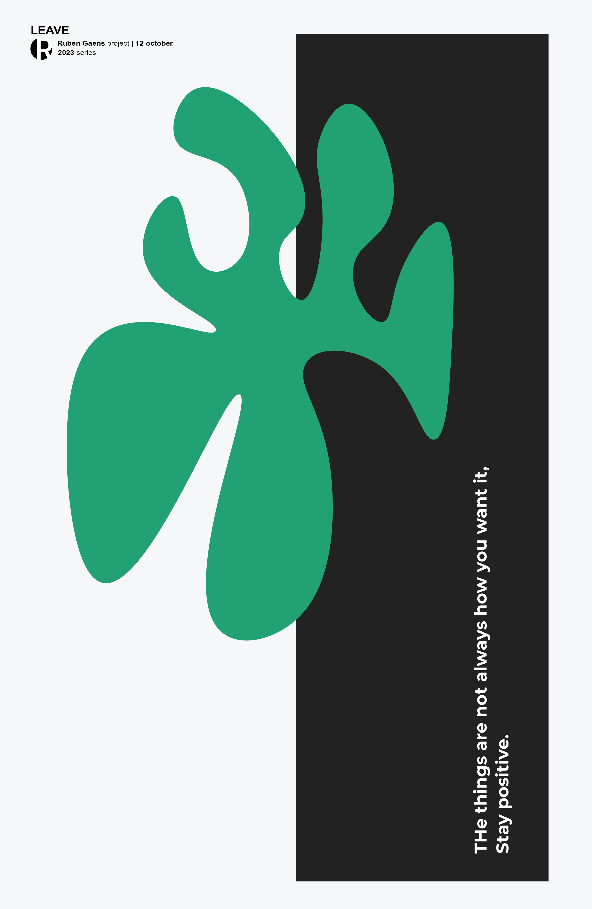
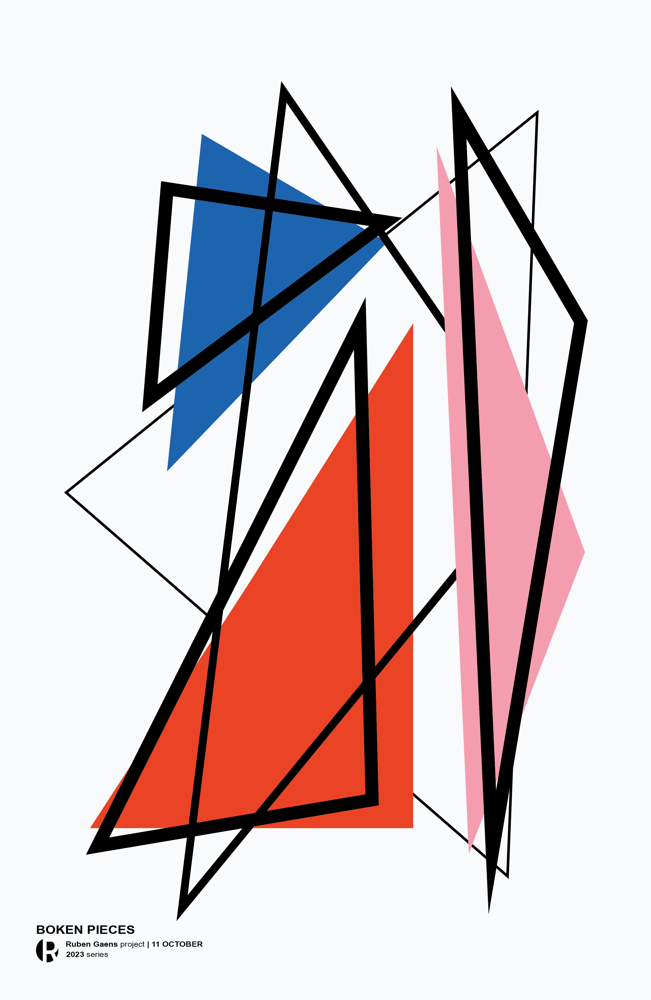
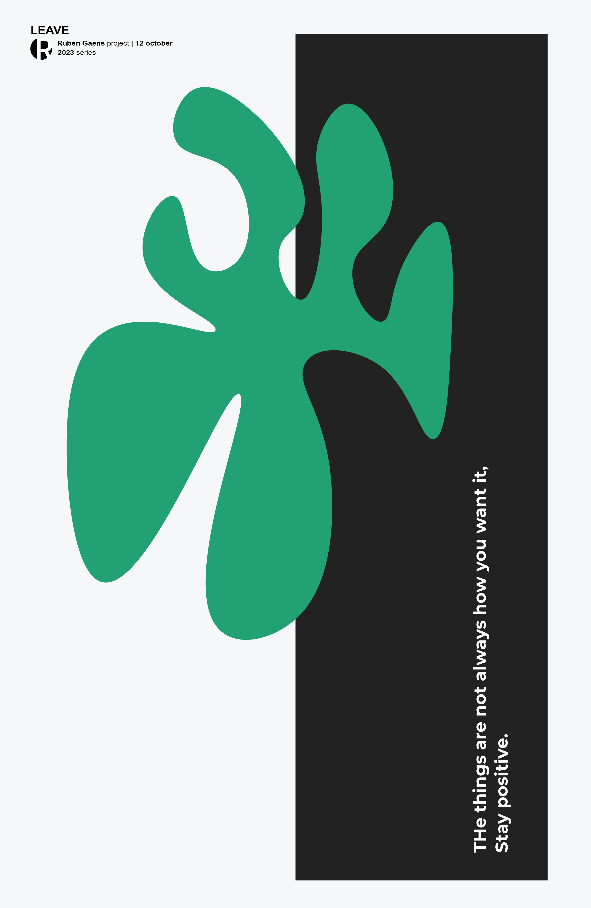
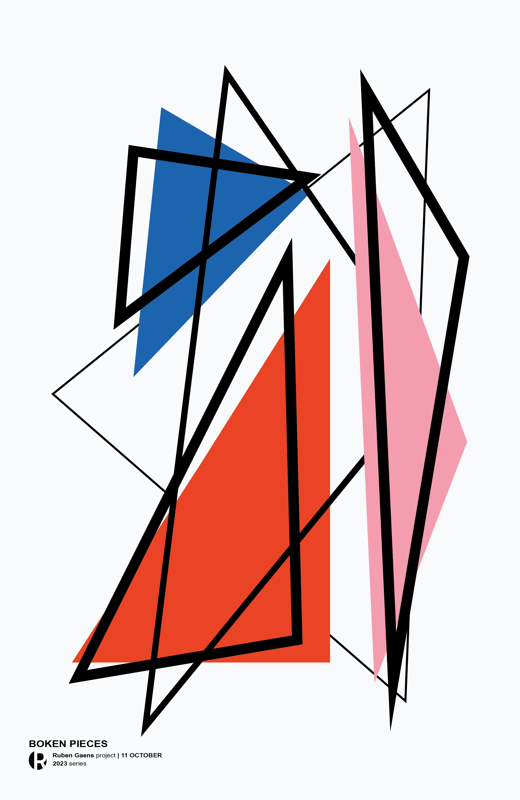

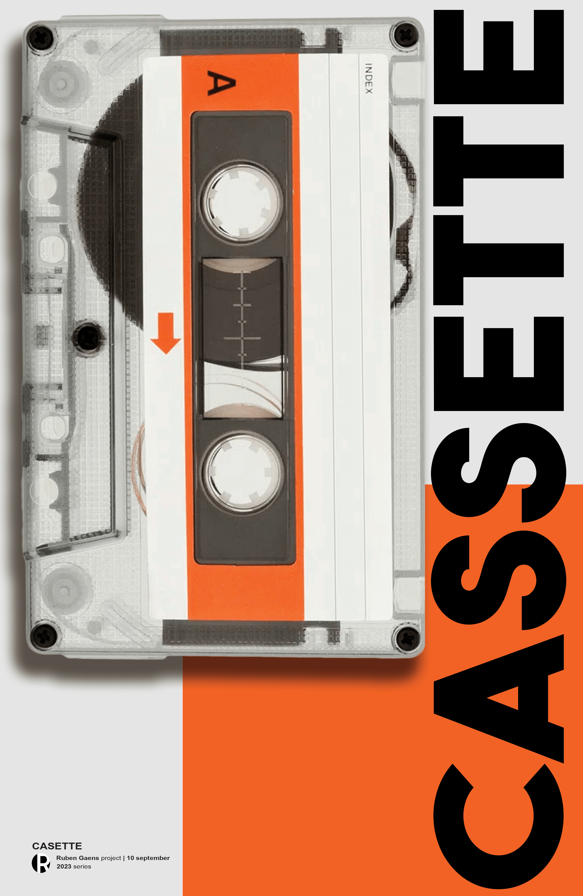
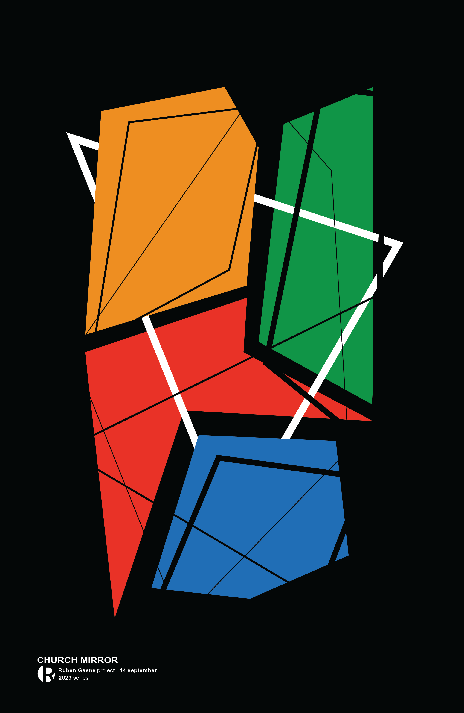
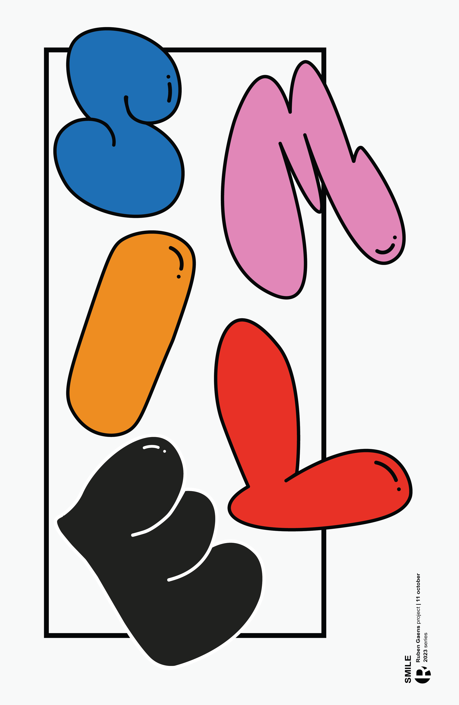

 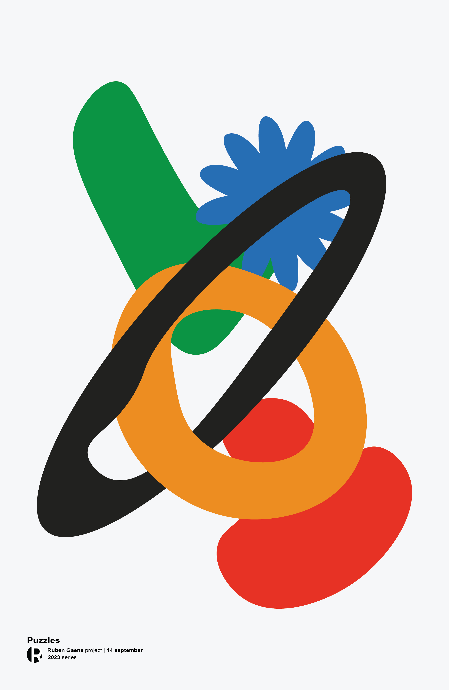
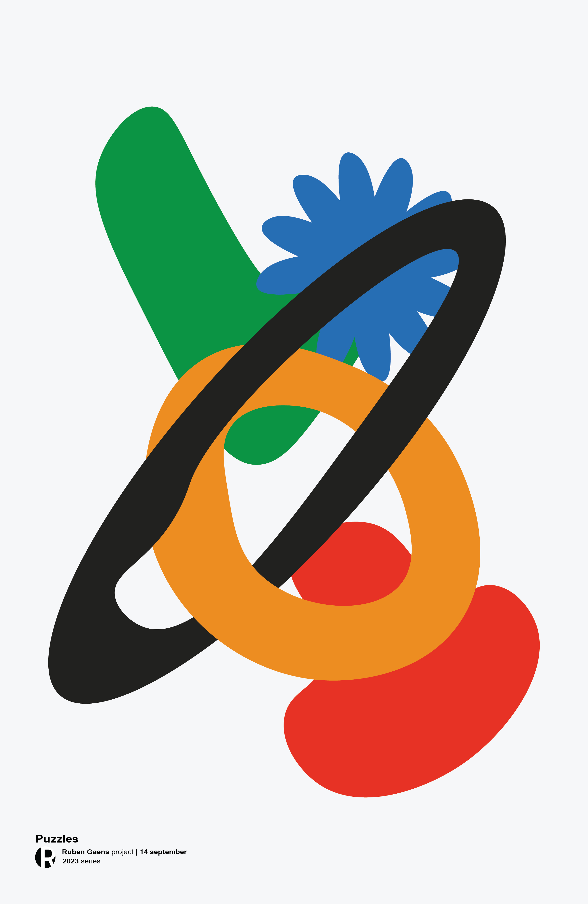

 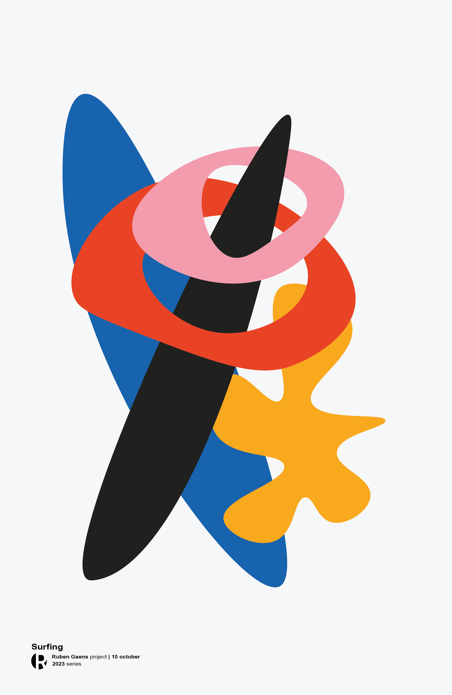
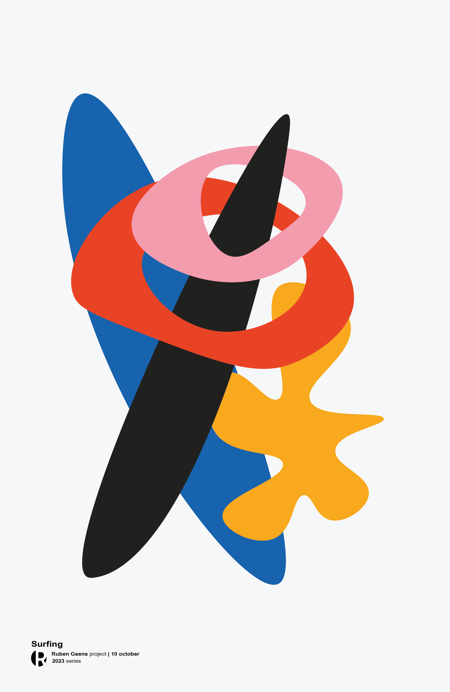